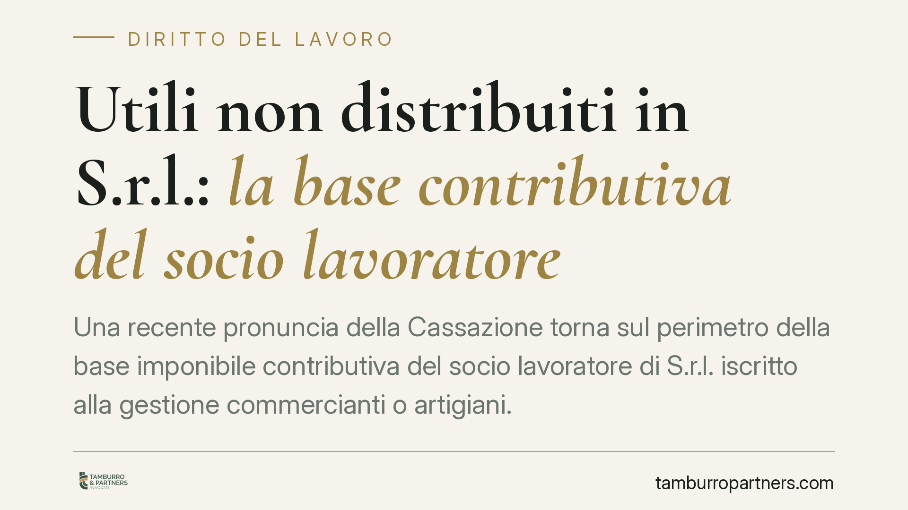

Utili non distribuiti in S.r.l.: la base contributiva del socio lavoratore
Una recente pronuncia della Cassazione torna sul perimetro della base imponibile contributiva del socio lavoratore di S.r.l. iscritto alla gestione commercianti o artigiani. Il punto è se gli utili accantonati a riserva e non distribuiti concorrano al calcolo dei contributi. La risposta cambia a seconda del regime fiscale adottato dalla società: ordinario o trasparenza. Una distinzione con effetti economici rilevanti.

Il caso
Il tema riguarda i soci di S.r.l. che prestano attività lavorativa nell'impresa e sono per questo iscritti alla gestione previdenziale commercianti o artigiani dell'INPS. L'istituto, in più occasioni, ha preteso che la base di calcolo dei contributi comprendesse l'intero reddito d'impresa attribuibile al socio, inclusa la quota di utili accantonata a riserva e non effettivamente percepita.
La questione non è marginale: significa chiedere contributi su somme che il socio non ha mai incassato, perché trattenute in società per autofinanziamento o altre finalità statutarie. Da qui il contenzioso.
Inquadramento normativo
La base imponibile contributiva per gli iscritti alle gestioni autonome è definita dall'art. 3-bis del D.L. 19 settembre 1992, n. 384, convertito nella L. 14 novembre 1992, n. 438. La norma àncora il calcolo alla "totalità dei redditi d'impresa denunciati ai fini IRPEF" per l'anno al quale i contributi si riferiscono.
Il criterio del reddito dichiarato ai fini IRPEF è decisivo. Perché un reddito d'impresa sia imputato al socio di S.r.l. ai fini IRPEF occorre che la società abbia optato per la trasparenza fiscale, secondo gli artt. 115 e 116 del DPR 22 dicembre 1986, n. 917 (TUIR). In regime di trasparenza il reddito è imputato direttamente ai soci in proporzione alle quote, a prescindere dall'effettiva distribuzione.
In assenza di tale opzione, la S.r.l. è soggetta a IRES in forma ordinaria. Il reddito è tassato in capo alla società; al socio nulla è imputato ai fini IRPEF finché non percepisce un dividendo. Mancando un reddito d'impresa denunciato ai fini IRPEF in capo al socio, viene meno il presupposto stesso dell'art. 3-bis.
È su questa linea che si colloca la pronuncia in commento, che valorizza la distinzione tra i due regimi contro un'impostazione INPS tendenzialmente omnicomprensiva. Va però precisato che la materia non registra un orientamento del tutto uniforme: la giurisprudenza ha affrontato più volte il tema con soluzioni differenziate a seconda del regime fiscale e delle circostanze del caso concreto. L'affermazione va quindi letta come principio ancorato alla fattispecie decisa, non come diritto vivente pacificamente consolidato.
Implicazioni pratiche
Per il socio lavoratore di S.r.l. in regime ordinario IRES, gli utili accantonati a riserva e non distribuiti non costituiscono, in linea di principio, base imponibile contributiva, non essendo redditi d'impresa a lui imputati ai fini IRPEF. La contribuzione segue l'effettiva percezione di dividendi, nei limiti in cui questi rilevino per la gestione.
Per il socio di S.r.l. in regime di trasparenza (artt. 115-116 TUIR), il reddito è imputato per competenza e concorre alla base contributiva anche se non distribuito. Chi opta per la trasparenza deve mettere in conto questo effetto previdenziale.
Un limite va segnalato con onestà: nelle S.r.l. a ristretta base partecipativa, l'INPS e la giurisprudenza possono valorizzare indizi di distribuzione occulta di utili. In tali casi l'esclusione dalla base contributiva non è automatica e dipende dalla prova dell'effettiva mancata percezione.
Cosa fare in concreto
- Verificate il regime fiscale della società. Accertate se la S.r.l. applica l'IRES ordinaria o ha esercitato l'opzione per la trasparenza ex artt. 115-116 TUIR: è il discrimine della base contributiva.
- Conservate le delibere assembleari. Le delibere di destinazione a riserva degli utili documentano la mancata distribuzione e costituiscono prova a fronte di pretese INPS.
- Controllate gli avvisi di addebito. Esaminate come l'INPS ha determinato la base imponibile e se ha incluso utili non percepiti in regime ordinario.
- Valutate i termini. È opportuno non attendere il passaggio al recupero coattivo: l'opposizione all'avviso di addebito è soggetta a termini perentori.
- In società a ristretta base, documentate i flussi. Movimentazioni e rapporti tra soci e società vanno tracciati per contrastare presunzioni di distribuzione occulta.
Conclusione
La distinzione tra regime ordinario e trasparenza fiscale è il cuore della questione contributiva per il socio lavoratore di S.r.l. La pronuncia offre un argomento difensivo solido, ma la sua portata va calibrata sul caso concreto e sulla struttura societaria. Ogni posizione merita una verifica puntuale di regime, delibere e atti dell'INPS.
Ogni storia di lavoro ha i suoi tempi.
Se gestisci HR e vuoi un confronto su contenzioso, ispezioni o licenziamenti, scrivi allo studio. Ti rispondiamo entro un giorno lavorativo.